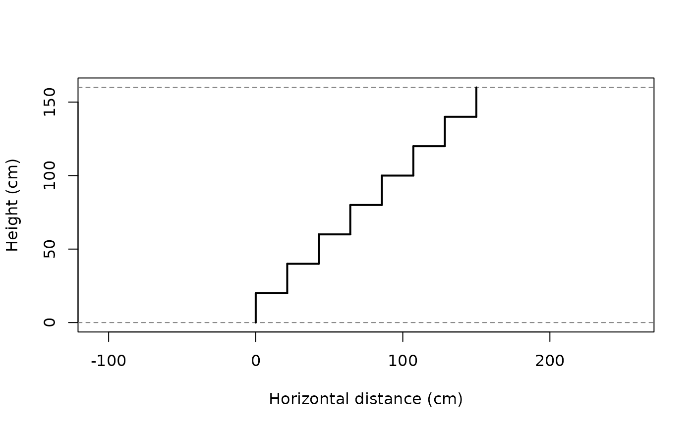

Main function of the package. Generates all feasible stair geometries matching the specified constraints without selecting a preferred solution.
Usage
solve_stairs(
total_height,
max_horizontal_run,
rise_min = 16,
rise_max = 20,
rise_target = 16,
blondel_target = 63,
show_invalid_solutions = FALSE
)Arguments
- total_height
numeric- Total vertical height to climb (cm).- max_horizontal_run
numeric- Maximum available horizontal length (cm).- rise_min
numeric- Minimum acceptable step height (cm). Default: 16.- rise_max
numeric- Maximum acceptable step height (cm). Default: 20.- rise_target
numeric- Target step height used to rank solutions (cm). Default: 16.- blondel_target
numeric- Target value for Blondel's formula2h + g. Default: 63 cm.- show_invalid_solutions
logical- IfTRUE, returns all generated solutions, including solutions that do not satisfy the constraints. Default:FALSE.
Value
A data.frame containing one row per generated solution.
Geometry is stored in the geometry list-column.
Details
For each valid number of steps, possible tread values are generated and complete stair geometries are computed. All solutions are returned in a single data frame, with geometry stored as a list-column.
Examples
sol <- solve_stairs(total_height = 160, max_horizontal_run = 150)
sol
#>
#> 6 valid solution(s)
#> n_risers step_rise rise_target_deviation going scenario
#> 12 8 20.00000 4.000000 23.00000 no_landing_uniform
#> 15 8 20.00000 4.000000 23.00000 landing_uniform
#> 7 9 17.77778 1.777778 27.44444 no_landing_uniform
#> 10 9 17.77778 1.777778 27.44444 landing_uniform
#> 2 10 16.00000 0.000000 31.00000 no_landing_uniform
#> 5 10 16.00000 0.000000 31.00000 landing_uniform
#> horizontal_run blondel blondel_target_deviation has_landing
#> 12 150 61.42857 1.571429 FALSE
#> 15 150 58.75000 4.250000 TRUE
#> 7 150 54.30556 8.694444 FALSE
#> 10 150 52.22222 10.777778 TRUE
#> 2 150 48.66667 14.333333 FALSE
#> 5 150 47.00000 16.000000 TRUE
#> horizontal_run_exceeded landing_impossible is_valid rank
#> 12 FALSE FALSE TRUE 1
#> 15 FALSE FALSE TRUE 2
#> 7 FALSE FALSE TRUE 3
#> 10 FALSE FALSE TRUE 4
#> 2 FALSE FALSE TRUE 5
#> 5 FALSE FALSE TRUE 6
#> ('geometry' list-col is hidden - access via $geometry[[i]])
plot(sol$geometry[[1]])

# Or get all the solutions, even impossibles
sol2 <- solve_stairs(160, 150, show_invalid_solutions = TRUE)
# plot the best solution :
meilleure <- best_solution(sol2)
# Filter out valid solution
subset(sol, is_valid)
#>
#> 6 valid solution(s)
#> n_risers step_rise rise_target_deviation going scenario
#> 12 8 20.00000 4.000000 23.00000 no_landing_uniform
#> 15 8 20.00000 4.000000 23.00000 landing_uniform
#> 7 9 17.77778 1.777778 27.44444 no_landing_uniform
#> 10 9 17.77778 1.777778 27.44444 landing_uniform
#> 2 10 16.00000 0.000000 31.00000 no_landing_uniform
#> 5 10 16.00000 0.000000 31.00000 landing_uniform
#> horizontal_run blondel blondel_target_deviation has_landing
#> 12 150 61.42857 1.571429 FALSE
#> 15 150 58.75000 4.250000 TRUE
#> 7 150 54.30556 8.694444 FALSE
#> 10 150 52.22222 10.777778 TRUE
#> 2 150 48.66667 14.333333 FALSE
#> 5 150 47.00000 16.000000 TRUE
#> horizontal_run_exceeded landing_impossible is_valid rank
#> 12 FALSE FALSE TRUE 1
#> 15 FALSE FALSE TRUE 2
#> 7 FALSE FALSE TRUE 3
#> 10 FALSE FALSE TRUE 4
#> 2 FALSE FALSE TRUE 5
#> 5 FALSE FALSE TRUE 6
#> ('geometry' list-col is hidden - access via $geometry[[i]])